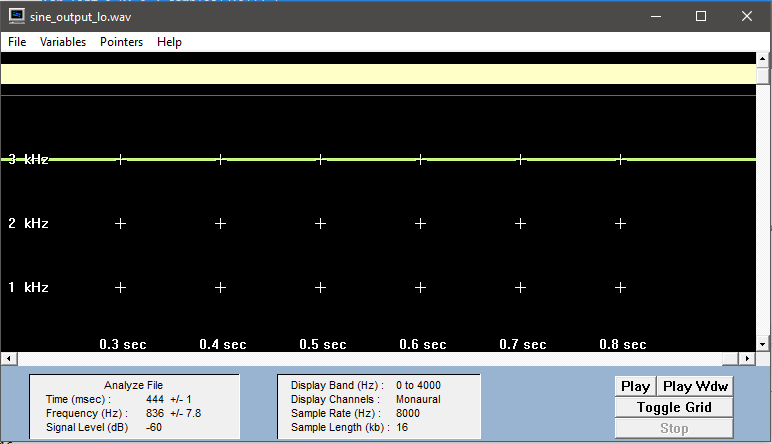

Originalaufnahme.
Aufnahme mit 4 Bit Reduktion.
Aufnahme mit 12 Bit Reduktion.


Nr.1 a)
for (int i=0; i < samples;i++) {
System.out.println(readWavFile.sound[i]);
}
Musikaufnahme
Sprachaufnahme
Nr.1 b)
Bei CDs wird eine Abtastrate von 44,1 kHz benutzt. Diese ist ausreichend, um Audiosignale mit Frequenzen bis 22 kHz zu erfassen. Bei DVDs sind Abtastraten bis 96 und 192 kHz möglich. Durch die höheren Abtastraten können die notwendigen analogen Tiefpassfilter für das Antialiasing mit einem geringeren Gütefaktor arbeiten, was eine geringere Steilheit und damit weniger Verzerrungen bewirkt. Auch kann die Grenzfrequenz nach oben geschoben werden, sodass Audiosignale mit entsprechend höheren Frequenzen sauber übertragen werden.
c)
Wieviele Kanäle nutzt das Audiosignal. 1 bei mono, 2 bei Stereo, 5 bei Dolby Surround
Ein Frame besteht aus 588 Stereo-Samples. Eine Sekunde Audio besteht aus 75 Frames. Dies ergibt sich aus der Berechnung 75 x 588 = 44.100. Da die Samplerate des CD-Formats 44.100 Hz (Samples pro Sekunde) beträgt, entspricht dieser Wert einer Sekunde Audio.
Die Abtastrate oder Abtastfrequenz, auch Samplingrate, Samplerate oder Samplingfrequenz, ist in der Signalverarbeitung die Häufigkeit, mit der ein Analogsignal (auch zeitkontinuierliches Signal genannt) in einer vorgegebenen Zeit abgetastet (das heißt, gemessen und in ein zeitdiskretes Signal umgewandelt) wird.
Die Samplingtiefe, auch Bittiefe genannt, gibt die Anzahl der Bits an, die bei der Quantisierung eines analogen Signals pro Abtastwert (=Sample) verwendet werden. Sie bestimmt, in wie vielen Abstufungen die Amplitude repräsentiert werden kann. Die Samplingtiefe ist neben der Samplingrate der zweite Parameter, durch den der Digitalisierungsvorgang beschrieben wird.
Die Bitrate ist eine Datenübertragungsrate und bezeichnet die Ausgabemenge von Informationseinheiten bei digitalen Multimediaformaten im Verhältnis einer Datenmenge zu einer Zeit, typischerweise gemessen in Bit pro Sekunde, abgekürzt als Bit/s oder bps. Mit fortschreitender Technik sind je nach Themengebiet immer mehr Vielfache üblich, angefangen bei kbit/s oder kbps (1.000 Bit/s), weiter mit Mbit/s (1.000.000 Bit/s) und Gbit/s (1.000.000.000 Bit/s).
d)
Musikdatei:
D = 44100/5 = 8820 frames/s
Sprachdatei:
D = 16000/5 = 3200 frames/s
Nr.2 a)for (int i=0; i < samples;i++) {
System.out.println(readWavFile.sound[i]);
}
sine_hi (Original)
Frequenz ( Sinus_LO ) = ca. 3000
Die Formel f0 = 1/T0 dient zur Bestimmung der Frequenz einer Schwingung. Die Frequenz der Schwingung "f0" und die Periodendauer "T0" der abgetastetend Schwingung stehen in Verhältnis zueinander. f0=1/n*Ta : durch die Multiplikation der Anzahl der Abtastwerte pro Schwingung n und des Abstands zwischen zwei Abtastwerten Ta wird T0 ermittelt. Ta=1/fa ---------> f0=1/n*fa (Ableitung, da fa Abtastfrequenz) Teilt man die Anzahl der Abtastwerte durch die Anzahl der Schwingungen innerhalb einer Periode erhält man n.

Sin_HI:
13623
16069
9102
-3196
-13623
-16069
-9102
3196
13623
Frequenz ( Sinus_HI ) =6 kHz
Begründung: Samplerate beträgt 16000 kHz. Diese teilt man durch die Anzahl der Samples in einer Amplitude. In diesem Fall wären das 3 Samples. Also 1/(8 / 3) *16 = 6kHz

Sin_LO:
13623
16069
9102
-3196
-13623
-16069
-9102
3196
13623
Frequenz ( Sinus_LO ) =3 kHz
Begründung: Samplerate beträgt 16000 kHz. Diese teilt man durch die Anzahl der Samples in einer Amplitude. In diesem Fall wären das 3 Samples. Also 1/(16 / 3) *16 = 3kHz
Abtasttheorem: fa > 2x f0 max
Mathematische Vorschrift, die besagt, dass bei der Analog/Digital-Wandlung die Abtastfrequenz mehr als doppelt so hoch sein muss wie die höchste Frequenz des zu digitalisierenden analogen Signals. Die Abtastfrequenz eines Audiosignals muss demnach größer als 40 kHz, die Abtastfrequenz eines Videosignals in HD größer als 60 MHz und in SD größer als 10 MHz sein. Das Abtasttheorem wird auch Nyquist- oder Shannon-Theorem genannt.

Die Vorbehandlung nennt sich Aliasing
Bei herkömmlichen Soundkarten wird Aliasing durch den Einsatz von Tiefpassfilter verhindert. Frequenzen, die >= fa / 2, werden herausgefiltert, so wird das Abtasttheorem eingehalten
Original (LO)
LO:
nach Downsampling (LO)
Frequenz: 6000Hz
Original (HI)
HI:
nach Downsampling (HI)

Frequenz: 2000Hz
Bei 16 bit Auflösung ist die höchstmögliche Anzahl der darstellbaren Amplitudenwerte 216=65536 und bei 8 bit Auflösung sind es 28=256.
for (int i=0; i < samples;i++) {
readWavFile.sound[i] = (short) ((int) (readWavFile.sound[i] / Math.pow(2, reduced_bits)) * Math.pow(2, reduced_bits));
}
Originalaufnahme. |
Aufnahme mit 4 Bit Reduktion. |
Aufnahme mit 12 Bit Reduktion. |
Die obige Grafik zeigt die Bitreduktion der monoton Sprachaufnahme im Originalzustand (links), der Aufnahme mit 4 Bit Reduktion (12 Bit verbleibend) und der Aufnahme mit 12 Bit Reduktion (4 Bit verbleibend) Wie in der Grafik zu sehen ist, sind die Unterschiede azwischen der Orginalaufnahme und der 4 Bit reduzierten Aufnahme maginal. Große unterschiede sind jedoch auf der 12 Bit reduzierten Aufnahme zu erkennen. Bei dieser ist die Stimme kaum noch zu verstehen. Auch im Spektrogramm ist dies deutlich zu erkennen, da die entweder sehr starke Ausschläge auftreten, oder im Orginal vorhandene Frequenzen jetzt nicht mehr vorliegen.
Originalaufnahme. |
Aufnahme mit 4 Bit Reduktion. |
Aufnahme mit 12 Bit Reduktion. |
Besonders störend ist das Rauschen, welches entsteht. Es wirkt zunächst im Hintergrund und verlagert sich "gefühlt" mit zunehmender Reduktion immer weiter in den Vordergrund, bis zuletzte die Musik / Sprache kaum bis gar nicht mehr zu verstehen ist.
short[] new_wave = new short[samples];
for(int i=0;i < samples;i++)
{
new_wave [i]=readWavFile.sound[i];
readWavFile.sound[i]/=16384;
readWavFile.sound[i]*=16384;
readWavFile.sound[i]-= new_wave[i];
readWavFile.sound[i]*=2;
}
Besonders störend ist das Rauschen, welches entsteht. Es wirkt zunächst im Hintergrund und verlagert sich "gefühlt" mit zunehmender Reduktion immer weiter in den Vordergrund, bis zuletzte die Musik / Sprache kaum bis gar nicht mehr zu verstehen ist.


{kind=link}
{kind=link}